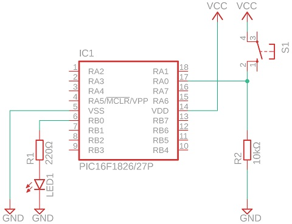

PIC講習/条件分岐
概要
本章では、条件に応じて実行する命令列を変える方法を解説します。
重要語
スキップ
次の命令を実行せず飛ばすこと
必要語
サイクル
命令実行の最小時間単位
条件分岐
条件分岐Conditional Branchとは、条件に応じて異なる命令列を選択することです。
これによって、コンピュータは数値を速く計算するだけの機械から大きく進歩しました。
スキップ
PICマイコンにおけるスキップSkipとは、機能的には、次の命令を実行せずに飛ばすことです。
実際には、次の命令を、プログラムメモリの内容にかかわらず、NOP命令と解釈します。
これらの表現の間の差異は、スキップしたときの実行時間にあります。
実際には、NOP命令1つ分、すなわち1サイクルの時間を要します。
BCS/BSS命令
BCS命令は、BCF命令と同じ引数を持ちます。
ただし、指定したビットを0にするのではなく、0だった場合にスキップを行います。
BSS命令も同様に、1であればスキップを行います。
スキップが起こらなかった場合は次の命令を実行します。
また、どの場合でも、指定したビットの値は変更されません。
複数命令のスキップ
PICのスキップ系命令は、その次の1命令のみしか飛ばせません。
しかし、GOT命令などを組み合わせることで、複数の命令を飛ばすことができます。
入力による分岐
PORTA/PORTBの特定のビットを条件にすることで、スイッチなどによって操作できるようになります。
入出力関係のレジスタの設定を忘れないようにしてください。
スイッチ付きLチカ
このプログラムは、Lチカのプログラムに4行追加したものです。
スイッチを押している間のみ点滅するようにしました。
入力をプルダウンするのを忘れないでください。

スイッチ付きLチカ
COL.STR.3 #どのバンクからでもアクセス可
COL.CF.0 #クリアフラグ
COL.ZF.2 #ゼロフラグ
COL.TRISA.$0C #バンク1
COL.TRISB.$0D #バンク1
COL.OSCCON.$19 #バンク1、オシレータ設定
COL.LATA.$0C #バンク2
COL.LATB.$0D #バンク2
COL.ANSELA.$0C #バンク3
COL.ANSELB.$0D #バンク3
COL.WAITA_0.$20 #自由に使えるメモリは$20から
COL.WAITB_0.$21
COL.WAITB_1.$22
COL.PWC.$8007 #コンフィギュレーションビット
WCF.$03.%100 #内蔵オシレータ
COL.PWC.0 #戻す
MBS.1 #バンク1に移動
BSF.TRISA.0 #RA0に入力{{新規追加部
}} CLR.TRISB #全ピン出力
MOV.%01101000 #4MHzで内部発振
MOV.OSCCON.F #設定する
MBS.3
CLR.ANSELA #アナログ入力は使わない{{新規追加部
}} MBS.0 #バンク0に戻る{{設定
}}
COL.START #ループ開始
MOV.%00000001
MBS.2 #バンク2
BSF.LATA.0 #RA0が1ならスキップ{{新規追加部
}} XOR.LATB.F #RB0の出力を反転する
MBS.0
CAL.WAITA #1秒待つ
GOT.START #戻る(無限にループする)
COL.WAITA #1秒待つ関数
MOV.100 #0.01秒を100回回す
MOV.WAITA_0.F #カウンタに代入
COL.WAITA-LOOP #ループ開始
CAL.WAITB #0.1秒待つ関数を呼ぶ
DES.WAITA_0.F #0ならスキップ
GOT.WAITA-LOOP #戻る
RET #関数を抜ける
COL.WAITB #9998サイクルかかる
MOV.38 #263サイクル*38回=9994サイクル
MOV.WAITB_0.F #上の命令、最後のRETと合わせて4サイクル
COL.WAITB_L0 #1つめのループ(1周263サイクル)
MOV.87 #3サイクル*87回=261サイクル
MOV.WAITB_1.F #上の命令と合わせて2サイクル
COL.WAITB_L1 #2つめのループ(1周3サイクル)
DES.WAITB_1.F #通常1、スキップ時2サイクル
GOT.WAITB_L1 #戻る、2サイクル
NOP #スキップ時の誤差1サイクル
DES.WAITB_0.F
GOT.WAITB_L0 #戻る
NOP #誤差1サイクル
RET #関数を抜ける(2サイクル)
練習問題
理解できたか確認するために、練習問題を解いてもらいます。
(1) 前項のプログラムを書き換え、スイッチを離している間のみ点滅するようにしてください。
(2) さらに、RB1ピンにもLEDを付け、交互に点滅するようにしてください。
(3) RA1ピンにもスイッチを付け、押すと休止状態に入るようにしてください。
抵抗を忘れずに付けるようにしましょう。
各問題のように動作するプログラムを書いて、試してみてください。
うまく動かなければ、間違いがないか確認してください。
どうしても動かなければ、以下の解答例を見てください。
解答
(1)解答例
MOV.$A0 {{新規追加部}}